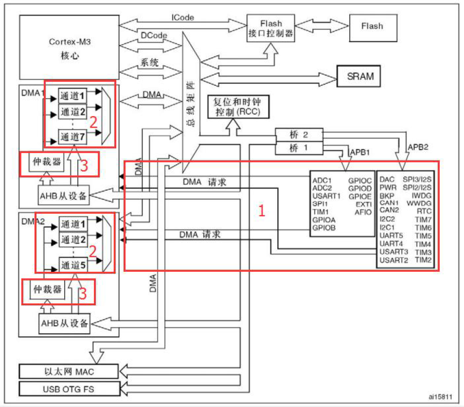
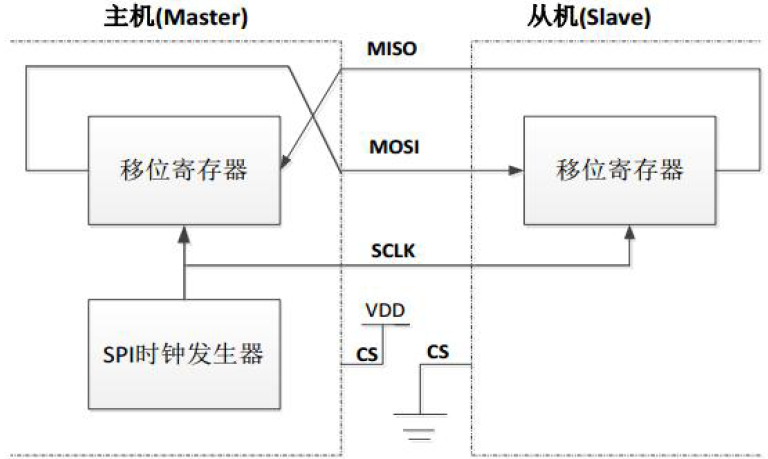
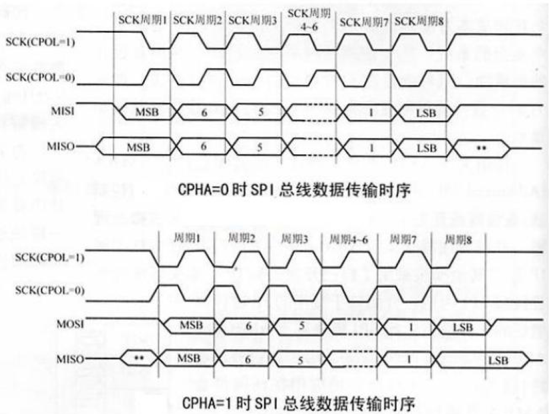
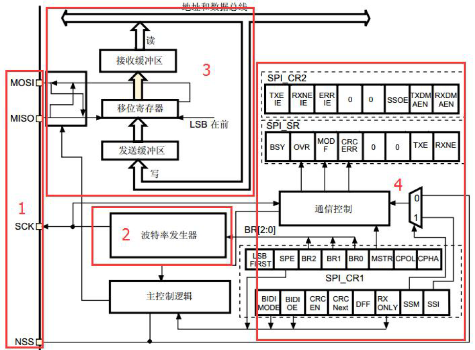

STM32¶
GPIO¶
EXTI¶
TIM¶
ADC¶
DAC¶
DMA¶
Direct Memory Access, 直接存储器访问
DMA传输数据移动过程无需CPU直接操作，节省的CPU资源可供其他操作使用
STM32F1最多有2个DMA控制器，其中DMA1有7个通道，DMA2有5个通道；每个通道专门用来管理来自于一个或多个外设对存储器访问的请求，还有一个仲裁器来协调各个DMA请求的优先权。
DMA结构框图¶
我们把DMA结构框图分成3个子模块：

-
标号1：DMA请求：如果外设要想通过DMA来传输数据，必须先给DMA控制器发送DMA请求，DMA收到请求信号之后，控制器会给外设一个应答信号，当外设应答后且DMA控制器收到应答信号之后，就会启动DMA传输，直到传输完毕。
-
标号2：DMA通道：DMA具有12个独立可编程的通道，其中DMA1有7个通道，DMA2有5个通道，每个通道对应不同的外设的DMA请求。虽然每个通道可以接收多个外设的请求，但是同一时间只能接收一个，不能同时接收多个。
-
标号3：仲裁器：当发生多个DMA通道请求时，就意味着有先后响应处理的顺序问题，这个就由仲裁器也管理。仲裁器管理DMA通道请求分为两个阶段。第一阶段属于软件阶段，可以在DMA_CCRx寄存器中设置，有4个等级：非常高、高、中和低四个优先级。第二阶段属于硬件阶段，如果两个或以上的DMA通道请求设置的优先级一样，则他们优先级取决于通道编号，编号越低优先权越高，比如通道0高于通道1。
DMA数据配置¶
使用DMA，最核心就是配置要传输的数据，包括数据从哪里来，要到哪里去，传输的数据的单位是什么，要传多少数据，是一次传输还是循环传输等
1.从哪里来，到哪里去
DMA传输数据的方向有三个：从外设到存储器，从存储器到外设，从存储器到存储器。具体的方向DMA_CCR位4 DIR 配置：0表示从外设到存储器，1表示从存储器到外设。这里面涉及到的外设地址由DMA_CPAR配置，存储器地址由DMA_CMAR 配置。
2.要传多少，单位是什么
以串口向电脑发送数据为例，我们可以一次性给电脑发送很多数据，具体多少由DMA_CNDTR配置，这是一个32位的寄存器，一次最多只能传输65535个数据。
要想数据传输正确，源和目标地址存储的数据宽度还必须一致，串口数据寄存器是8位的，所以我们定义的要发送的数据也必须是8位。外设的数据宽度由DMA_CCR的PSIZE[1:0]配置，可以是8/16/32位，存储器的数据宽度由DMA_CCR的MSIZE[1:0]配置，可以是8/16/32位。
在DMA控制器的控制下，数据要想有条不紊的从一个地方搬到另外一个地方，还必须正确设置两边数据指针的增量模式。外设的地址指针由DMA_CCRx的PINC配置，存储器的地址指针由MINC配置。以串口向电脑发送数据为例，要发送的数据很多，每发送完一个，那么存储器的地址指针就应该加1，而串口数据寄存器只有一个，那么外设的地址指针就固定不变。具体的数据指针的增量模式由实际情况决定。
3.什么时候传输完成
我们可以通过查询标志位或者通过中断的方式来判断数据什么时候传输完成。每个DMA通道在DMA传输过半、传输完成和传输错误时都会有相应的标志位，如果使能了该类型的中断后，则会产生中断。有关各个标志位的详细描述请参考DMA中断状态寄存器DMA_ISR的详细描述。
传输完成还分两种模式，是一次传输还是循环传输，一次传输即传输一次之后就停止，要想再传输的话，必须关断DMA使能后再重新配置后才能继续传输。循环传输则是一次传输完成之后又恢复第一次传输时的配置循环传输，不断的重复。具体的由DMA_CCR寄存器的CIRC循环模式位控制。
DMA配置步骤¶
1.使能DMA控制器时钟
要使能DMA时钟，需通过AHB1ENR寄存器来控制，使能DMA时钟库函数为：
例如使能DMA1时钟，函数如下：2.初始化DMA通道
使用DMA，必须对其相关参数进行设置，包括通道选择、外设和内存地址、通道优先级、传输数据量的配置等。该部分设置通过DMA初始化函数DMA_Init完成的：
函数中第一个参数是用来确定DMA通道，参数范围为：DMA1_Channel_0~DMA1_Channel_7(DMA2是DMA2_Channel_0-DMA2_Channel_5)。第二个参数是一个结构体指针变量，结构体类型是DMA_InitTypeDef，其内包含了DMA相关参数的设置。typedef struct
{
uint32_t DMA_PeripheralBaseAddr; // 外设地址
uint32_t DMA_MemoryBaseAddr; // 存储器地址
uint32_t DMA_DIR; // 传输方向
uint32_t DMA_BufferSize; // 传输数据的大小
uint32_t DMA_PeripheralInc; // 外设地址增量模式
uint32_t DMA_MemoryInc; // 存储器地址增量模式
uint32_t DMA_PeripheralDataSize; // 外设数据宽度
uint32_t DMA_MemoryDataSize; // 存储器数据宽度
uint32_t DMA_Mode; // 模式选择
uint32_t DMA_Priority; // 通道优先级
uint32_t DMA_M2M; // 存储器到存储器模式
} DMA_InitTypeDef;
3.使能外设DMA功能
配置好DMA后，我们就需要使能外设DMA功能，例如我们要使能串口的DMA发送功能：
如果是要使能串口DMA接受，那么第二个参数修改为USART_DMAReq_Rx即可。 如果是其他的外设需开启DMA功能，只需要在对应的标准外设库函数中查找到对应的外设DMA使能函数。4.开启DMA的通道传输
初始化DMA后，要使用DMA还必须开启它：
第一个参数为外设所对应的DMA通道，第二个参数为使能信号。5.查询DMA传输状态
通过以上设置，我们就可以启动一次DMA传输了。但是在DMA传输过程中，我们还需要查询DMA传输通道的状态，使用的库函数是：
例如我们要查询DMA1通道4传输是否完成，方法是： 标准库中，还提供了获取当前剩余数据量大小的函数：uint16_t DMA_GetCurrDataCounter(DMA_Channel_TypeDef* DMAy_Channelx);
DMA_GetCurrDataCounter(DMA1_Channel4);
SPI¶
Serial Peripheral Interference，串行外围接口
SPI是一种高速的，全双工，同步的通信总线，并且在芯片的管脚上只占用四根线，节约了芯片的管脚，同时为PCB的布局上节省空间
SPI特点：可以同时发出和接收串行数据；可以当作主机或从机工作；提供频率可编程时钟；发送结束中断标志；写冲突保护；总线竞争保护等
SPI简介¶
SPI内部结构的简易图如下：

SPI接口一般使用4条线进行通信，其中3条为SPI总线(MISO/MOSI/SCLK)，一条为SPI片选信号线(CS)
- MISO:主设备输入/从设备输出引脚。主机从这条信号线读入数据，从机的数据由这条信号线输出到主机
- MOSI:主设备输出/从设备输入引脚。主机的数据从这条信号线输出，从机由这条信号线读入主机发送的数据
- SCLK:时钟信号线，用于通信数据同步。它由主机产生，决定了通信的速率，两个设备之间通讯时，通讯速率受限于低速设备
- CS:片选信号线，也称为NSS。当有多个SPI从机与SPI主机相连时，设备的其它信号线SCK、MOSI及MISO同时并联到相同的SPI总线上，即无论有多少个从设备，都共同只使用这3条总线；而每个从设备都有独立的CS信号线，有多少个从设备，就有多少条片选信号线。当主机要选择从设备时，把该从设备的CS信号线设置为低电平，接着主机开始与被选中的从设备进行SPI通信。
SPI总线有四种工作方式，通过配置串行同步时钟的极性和相位实现：
- 时钟极性(CPOL):若CPOL=0，串行同步时钟的空闲状态为低电平；反之则为高电平
- 时钟相位(CPHA):若CPHA=0，在时钟的第一个跳变沿数据被采样；若CPHA=1，在时钟第二个跳变沿进行数据采样。
SPI主机与从机的时钟相位和极性应该保持一致
SPI结构框图¶
我们把STM32F1的SPI结构框图分为4个子模块：

1.SPI接口引脚
2.时钟控制逻辑
3.数据控制逻辑
4.整体控制逻辑